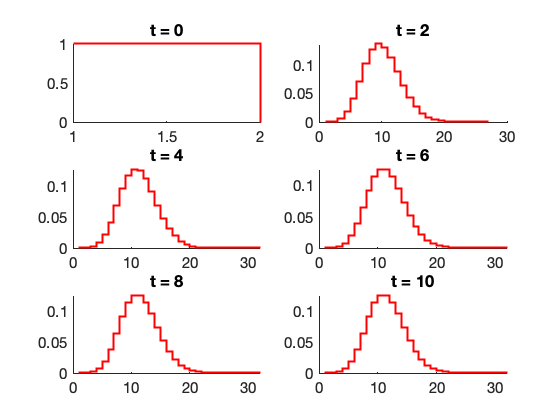

Contents
fimExample
In this script, we show how to set up and solve the FSP-FIM matrix with partial observations and probabilistic distortion.
clear all close all addpath(genpath('../src'));
(1) Set up Model
ModelChoice = 'CentralDogma'; % Two species problem (mRNa and protein) F2 = SSIT(ModelChoice); F2 = F2.formPropensitiesGeneral('FIMExample');
(2) Solve FSP for model
F2.solutionScheme = 'FSP'; % Set solution scheme to FSP. [FSPsoln,F2.fspOptions.bounds] = F2.solve; % Solve the FSP analysis % Plot the results from the FSP analysis fig1 = figure(1);clf; set(fig1,'Name','Marginal Distributions, mRNA'); fig2 = figure(2);clf; set(fig2,'Name','Marginal Distributions, Protein'); F2.makePlot(FSPsoln,'marginals',[1:4:21],false,[fig1,fig2],{'r-','linewidth',2})
(3) Solve FSP Sensitivity
F2.solutionScheme = 'fspSens'; % Set solutions scheme to FSP Sensitivity [sensSoln,bounds] = F2.solve(FSPsoln.stateSpace); % Solve the sensitivity problem % Plot the results from the sensitivity analysis fig3 = figure(3);clf; set(fig3,'Name','Marginal Sensitivity, mRNA'); fig4 = figure(4);clf; set(fig4,'Name','Marginal Sensitivity, Protein'); F2.makePlot(sensSoln,'marginals',[],false,[fig3,fig4],{'b','linewidth',2})
(4) Compute FIM using FSP Sensitivity Results
fimResults = F2.computeFIM(sensSoln.sens); % Compute the FIM for full observations and no distortion. cellCounts = 10*ones(size(F2.tSpan)); % Number of cells in each experiment. [fimTotal,mleCovEstimate,fimMetrics] = F2.evaluateExperiment(fimResults,cellCounts) fig5 = figure(5);clf; set(fig5,'Name','Fim-Predicted Uncertainty Ellipses'); F2.plotMHResults([],fimTotal,'lin',[],fig5) legend('FIM - Full Observation')
fimTotal =
1×1 cell array
{4×4 double}
mleCovEstimate =
1×1 cell array
{4×4 double}
fimMetrics =
struct with fields:
det: 15056904911.6332
trace: 31032.4672181693
minEigVal: 1.01963610988029
(5) Compute FIM for Partial Observations
F2.pdoOptions.PDO=[]; F2.pdoOptions.unobservedSpecies = 'x1'; [fimResults_partialObs] = F2.computeFIM(sensSoln.sens); % Compute the FIM for full observations and no distortion. [fimTotal_partialObs,mleCovEstimate_partialObs,fimMetrics_partialObs] = F2.evaluateExperiment(fimResults_partialObs,cellCounts) fig6 = figure(6);clf; set(fig6,'Name','Fim-Predicted Uncertainty Ellipses'); F2.plotMHResults([],[fimTotal,fimTotal_partialObs],'lin',[],fig6) legend('FIM - Full Observation','FIM - Protein Only')
fimTotal_partialObs =
1×1 cell array
{4×4 double}
mleCovEstimate_partialObs =
1×1 cell array
{4×4 double}
fimMetrics_partialObs =
struct with fields:
det: 15334574.1344478
trace: 28026.2035042016
minEigVal: 0.265831373533071
(6) Compute FIM for Distorted Observation (Probabilistic Distortion Operator)
F2.pdoOptions.unobservedSpecies = 'x1'; pdoOptions.type = 'Binomial'; % Need to define loss parameter for each species S1, S2,... pdoOptions.props.CaptureProbabilityS1 = 0; % Use zero for unobserved species. pdoOptions.props.CaptureProbabilityS2 = 0.9; % Call method to generate the PDO. F2.pdoOptions.PDO = F2.generatePDO(pdoOptions,[],FSPsoln.fsp); % Plot the PDO N = size(F2.pdoOptions.PDO.conditionalPmfs{1}); fig7 = figure(7); set(fig7,'Name','Probabilistic Distortion Operator for Protein'); contourf([0:N(1)-1],[0:N(2)-1],log10(F2.pdoOptions.PDO.conditionalPmfs{1})); % Here we wanted the first PDO for 'x2' because 'x1' was unobserved. xlabel('Actual');ylabel('Observable');colorbar; % Solve FIM using the specified PDO [fimResults_BinomialPDO] = F2.computeFIM(sensSoln.sens); % Compute the FIM for full observations and no distortion. [fimTotal_BinomialPDO,mleCovEstimate_BinomialPDO,fimMetrics_BinomialPDO] =... F2.evaluateExperiment(fimResults_BinomialPDO,cellCounts) fig8 = figure(8);clf; set(fig8,'Name','Fim-Predicted Uncertainty Ellipses'); F2.plotMHResults([],[fimTotal,fimTotal_partialObs,fimTotal_BinomialPDO],'lin',[],fig8) legend('FIM - Full Observation','FIM - Protein Only','FIM - Protein with Error')
fimTotal_BinomialPDO =
1×1 cell array
{4×4 double}
mleCovEstimate_BinomialPDO =
1×1 cell array
{4×4 double}
fimMetrics_BinomialPDO =
struct with fields:
det: 11753387.7754394
trace: 26697.17034425
minEigVal: 0.240145214258803